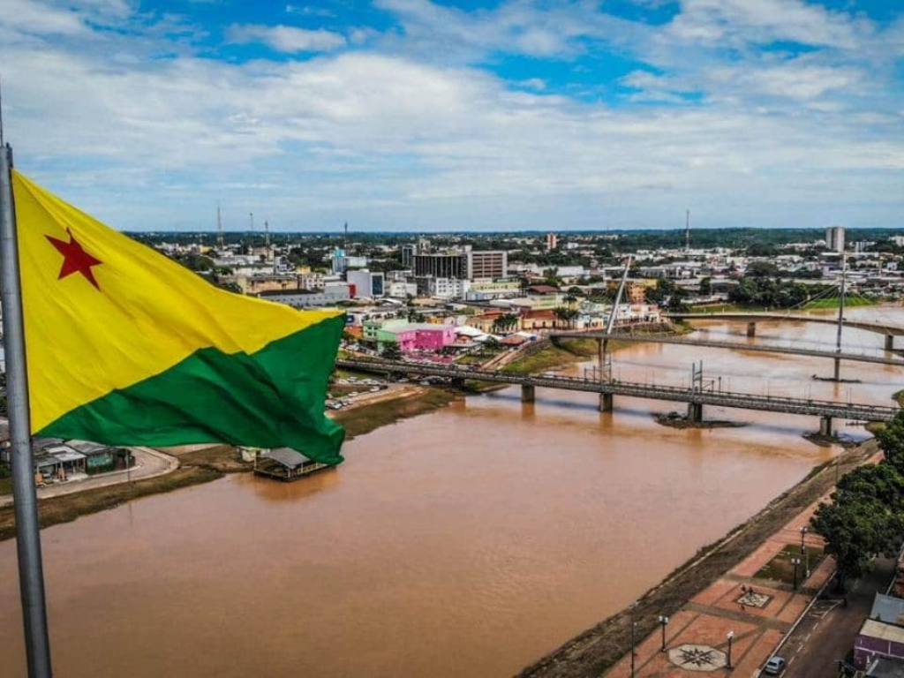

O Acre está localizado no extremo oeste do Brasil, faz fronteira com o Peru e a Bolívia e tem como capital Rio Branco. O estado é conhecido pela forte presença da Floresta Amazônica, pela biodiversidade e pela economia baseada no extrativismo, agricultura e pecuária, além de possuir uma cultura marcada por influências indígenas e nordestinas

Voltar